语音对抗攻击
语音对抗调研
前言
相较于在图像上进行对抗攻击，对语音识别任务进行对抗攻击起步更晚，也更具有挑战性。原因在于语音识别极大依赖于语音信号数据中的频率和时序赖关系，在输入模型识别前需要对语音进行预处理和语音特征提取得到语音频谱图，图像上的对抗攻击可以利用给定可微损失函数的梯度来指导对抗搜索，但是语音上的损失标准一般不可分解，很难用梯度的方法去生成对抗样本。
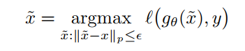
下面说一下针对语音识别系统对抗攻击的几个标志性工作：
2015年，Vaidya等人首次尝试针对语音识别系统的扰动攻击，在语音识别系统与处理环节中的特征提取步骤修改输入语音信号，生成人耳无法辨别但能被云隐识别系统正确识别的语音信号，但是实际扰动较大，效果并不好。
2016年，Calini等人提出了“隐藏语音指令”攻击，设计了基于梯度优化的生成对抗扰动的方法，为了在音频信号特征提取后依然保持对抗性，采用了逆语音特征提取的方法反向得到音频信号。但同样容易被人耳感知。
2017年，zhang等人提出了“海豚音攻击”。为了让攻击不被人耳察觉，将对抗扰动频率提高到了20Khz以上，虽然不容易被人耳察觉，但是很溶剂被过滤和检测，此外，还需要特定设备发射播放得到超声信号。
2018年，Calini和Wagner在流行的语音识别系统DeepSpeech上生成了实际意义的对抗样本，借鉴了图像分类的C&W攻击方法并在目标函数中使用了深度学习语音识别模型特有的CTC损失函数。使修改后的音频不易被人耳察觉，同时也能使基于深度学习的识别系统错误识别。但是在噪声环境下鲁棒性较差。
ps：2018年之前的工作不能称为真正意义上的对抗性样本，因为生成的音频对原始语音的扰动太大，人很容易意识到语音被篡改，并且攻击的语音模型不是基于深度学习训练得到的。
深度学习语音识别框架
1. end-to-end语音识别模型
输入一段.wav格式的音频识别步骤：
1）预处理：会进行解码、降噪等操作，把音频分成较短的帧；
2）特征提取：从短帧中提取声学特征，常用MFCC特征(梅尔倒谱系数);
3）基于模型的预测：将声学特征作为输入数据，生成预测结果，主流系统通常使用RNNs+CTC损失函数模型
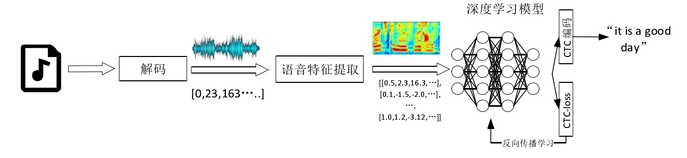
这里有两个地方需要进行了解:
一个是CTC函数，是一种声学模型，CTC-Loss函数，在设计语音对抗样本Loss函数时可能需要用到；一个是MFCC，了解语音信息的特征提取过程，便于设计对抗生成方法。
2. 基于分类的语音系统
1）预处理：同上；
2）特征提取：一般用CNNs提取audio-level feature和frame-level feature
3）基于模型的预测：将声学特征作为输入数据，生成预测结果，模型通常用CNNs
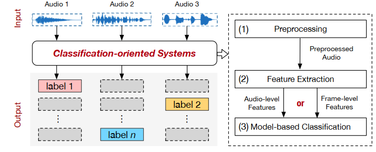
3.目前各公司使用的一些语音识别系统：
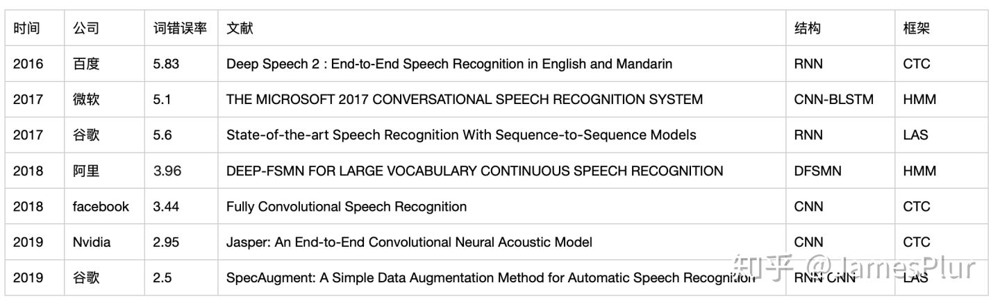
背景知识
1. CTC
CTC是一种RNN的端到端训练方法，可以让RNN直接对序列数据进行学习，而无需事先标注好训练数据中输入序列和输出序列的映射关系。音频数据很难像文本那样进行分割，因此无法直接使用RNN进行训练。
给定输入序列 X={x1,x2,……xT}以及对应的标签数据 Y={y1,y2,……yU}，目的是找到X到Y的一个映射，这种对时序数据进行分类的算法叫做Temporal Classification。
CTC提供了解决方案，对于一个给定的输入序列 X ，CTC给出所有可能的 Y 的输出分布。根据这个分布，我们可以输出最可能的结果或者给出某个输出的概率。 $Y^*=argmax_yP(Y|X)$
1.1 对齐
在CTC中，多个输出路径会对应一个输出结果，输入X是”CAT”的语音，输出Y是文本[C,A,T],音频做切割后，每个时间片得到一个输出。因此X和Y之间的映射是多对一的，在对齐时要考虑去重和引入空白字符。
- HHHEE_LL_LLLOOO 去重
- HE_L_LO 去除空白字符
- HELLO 完成
1.2 CTC loss数学推导
略，太长只过了一遍
https://www.cnblogs.com/shiyublog/p/10493348.html
1.3 结果搜索
贪心搜索是选取每一帧预测概率最大的那一项作为结果，此外还有束搜索，和基于动态规划的搜索。
方法
场景
1. speech-to-text
| input | output |
|---|---|
| 正常语音+扰动 | 目标语义 |
| 正常语音+扰动 | 空语义 |
| 随机噪音+扰动 | 目标语义 |
2. speech commands classification
| input | output |
|---|---|
| 正常语音+扰动 | 目标分类 |
| 正常语音+扰动 | 随机分类 |
| 随机噪音+扰动 | 目标分类 |
18年之前的工作基本都是基于传统的语音模型（非神经网络）来做的，或是需要生成全新的音频，例如一段音乐隐藏语音指令这种，不能实现类似于图像对抗中与源数据不可区分的效果；
Hidden voice commands.
Dolphinattack: Inaudible voice commands.
Inaudible voice commands.
同时期另一条研究线路能够做到于源数据几乎不可区分的untarget攻击；
Crafting adversarial examples for speech paralinguistics applications.
Houdini: Fooling deep structured prediction models.
2018年Carlini & Wagner实现了针对任意多词句子的语音识别系统构建了对抗样本，但不能在real world有效。同年CommanderSong开发出了在real world有效的对抗样本，但代价是给原始音频引入了明显的扰动。
Audio adversarial examples: Targeted attacks on speech-to-text.
Commandersong: A systematic approach for practical adversarial voice recognition.
此后，一些工作开发了对深度学习ASR系统的攻击，要么在real world中工作，要么不那么明显地被察觉
Robust audio adversarial example for a physical attack.
Adversarial attacks against automatic speech recognition systems via psychoacoustic hiding.
在后面，就是一些将白盒设置转为黑盒设置的一些工作
Adversarial blackbox attacks for automatic speech recognition systems using multi-objective genetic optimization.
Targeted adversarial examples for black box audio systems.
具体方法
直觉是直接使用图像中生成对抗样本的算法，例如FGSM、DeepFool、PGD等等，但是这些方法在语音对抗样本生成过程中都不好用。因此需要新的算法设计。
1. 真正意义上第一个对抗语音工作：Audio Adversarial Examples:Targeted Attacks on Speech-to-Text 作者是C&W
https://github.com/carlini/audio_adversarial_examples
白盒场景下，针对百度DeepSpeech迭代优化攻击。给定任意音频波形，可以产生99.99%相似的另一个音频，且可以转录为所选择的任何短语。
算法：借鉴了图像对抗样本中的C&W方法，将对抗语音生成问题首次转换为了优化问题，并首次在语音对抗样本生成目标函数中引入了深度学习语音识别模型特有的CTC损失函数。
| Initial | Reformulation | Solve $l_{\infty}$ without converge |
|---|---|---|
| 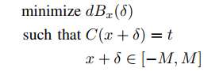 | 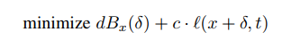 | 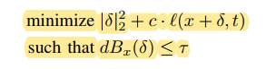 |
在这里设$l(x’,t)=CTC-Loss(x’,t)$，
Improved loss function：
| 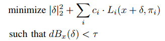 | 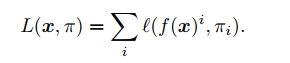 | 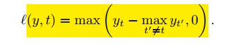 |
|---|
本文在improved loss中说明攻击方法只能在 DeepSpeech 使用 Greedy-Search 的情况下有效。
- Demo
| Status | Audio | Transcription |
|---|---|---|
| original | without the dataset the article is useless | |
| adversarial | okay google browse to evil dot com |
2. 两阶段优化求解噪声：SirenAttack: Generating Adversarial Audio for End-to-End Acoustic Systems
白盒：第一阶段先利用粒子群算法(PSO)求出粗粒度的噪声$\delta$,第二阶段再利用CTC-loss反馈的梯度信息使用Fooling Gradient方法对其矫正求出更精确的$\delta$。
黑盒：由于没有loss信息，所以在第一阶段引入模型置信度量，引导粒子群向更优方向迭代，效果有限。
亮点：涉及到了黑盒、计算效率高生成时间段、攻击测试了多个主流的语音识别模型
3. 设计新的代理损失函数：Houdini: Fooling Deep Structured Visual and Speech Recognition Models with Adversarial Examples
解决了对抗样本生成中评价指标存在组合及不可谓的问题，如语音识别中常用word error rate来评价，其就是不可微的。文章中提到，虽然CTC针对语音识别任务是一种可微的代理损失函数，但是针对其他结构性任务（如语义分割、姿态估计等）并没有一致性保证。本文实际是提出了一种针对类似不可微问题下生成对抗样本的框架。
文章提出了一种Houdini代理损失函数，可以用来针对结构性任务生成对抗样本：
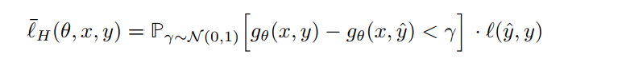
文章中还对基于Houdini和CTC两种损失函数生成的对抗样本进行了比较，结果显示Houdini要优于CTC，但是target攻击效果并不好。 ps:由于遇到MFC层反向传播的困难，因此攻击只能生成音谱对抗数据，不能直接生成audio，工作1解决了这个问题。
4. 不可察觉+鲁棒：Imperceptible, Robust, and Targeted Adversarial Examples for Automatic Speech Recognition
- 白盒、有目标的、针对端到端LAS模型的对抗攻击算法；
- 心里掩蔽效应
- 模拟房间声学响应
亮点在于优化语音对抗输入使其对人耳不可分辨，且更加Robust，首次在real world中产生有效攻击。提出了非基于$l_p$的对抗样本构造方法。
不可察觉：文中未使用$l_p$失真度量，而是依赖于构建心理学模型使得对抗语音难以察觉：频率掩蔽通过使用另外一种充当“掩蔽器”的信号对对抗性样本进行掩护，实质是在人类听不到音频区域添加对抗扰动。优化分为两阶段，首先寻找一个相对较小的的扰动欺骗网络（和C&W工作相同），再去优化对抗样本使其不易察觉。
物理世界可用：考虑在训练时引入随机房间环境模拟器，考虑现实环境中的影响，实验只在模拟环境下有效。带混响的优化。
最后算法将两个目标结合，设计了优化损失函数。
5. 白盒鲁棒：Robust Audio Adversarial Example for a Physical Attack
https://github.com/hiromu/robust_audio_ae
亮点：引入脉冲响应，首次实现了pysical下的对抗样本攻击，直接思路就是讲环境带来的扰动提前考虑进来，用到了三个技术：
- Band-pass Filter：麦克风会去除环境中的一些杂音，若对抗扰动超出范围，则会被剪切，因此在损失函数中讲对抗扰动固定在不会被剪切的一个范围。
- Impulse Response：将环境中的脉冲响应考虑进损失函数，增强对抗语音在使用中对混响的鲁棒性。
- White Gaussian Noise：模拟环境中许多自然产生的背景噪声
6. 鲁棒：Towards Resistant Audio Adversarial Examples
考虑实际场景下播放器和麦克风之间距离引起的位移偏差，在优化对抗数据时加入偏差因素，使得最终的对抗语音具有较好的鲁棒性。
7. 黑盒：Targeted Adversarial Examples for Black Box Audio Systems
code：https://github.com/rtaori/Black-Box-Audio
- 黑盒、有目标的攻击DeepSpeech的对抗攻击算法
- 两阶段方法：遗传（改进引入Momentum mutation）+梯度估计
- 问题：出现了query次数巨大的问题，适用场景有限
8. Cocaine Noodles: Exploiting the Gap between Human and Machine Speech Recognition
- 攻击特征模块
- 思路简单，提取MFCC特征（这个过程会丢失一些语音信息），然后把MFCC特征逆转为语音信号
- 算法描述不清晰，如何对MFCC逆转没过多提及。
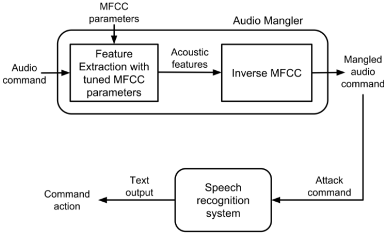
9. 黑盒&白盒：Hidden Voice Commands
黑盒下生成一段无关的音频，其中隐藏有语音指令，本质上还不能称之为对抗语音，因为生成的音频不是不可察觉的。
- 是对Cocaine Noodles的完善
- 攻击特征提取模块
- 使用梯度下降算法攻击GMM-HMM模型
- 从这篇开始语音对抗有了比较清晰的思路，calini还是很有经验的。
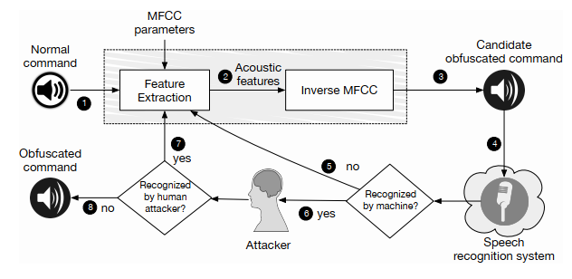
比较关键的是MFCC parameter和inverse MFCC这两步。计算MFCC然后逆转为时域信号的过程，能够从理论上保留语音识别算法关注的特征，而抹除不想管的语音特征，而抹除的这部分特征又很可能是对人的听觉影响是很大的，导致人无法听清对抗样本。
10. 黑盒：“Did you hear that? Adversarial Examples Against Automatic Speech Recognition,”
https://github.com/nesl/adversarial_audio
场景是语音分类场景下的对抗样本攻击，攻击目标是ASR，指出语音对抗样本无法适用基于梯度的优化迭代方法，使用了遗传算法。
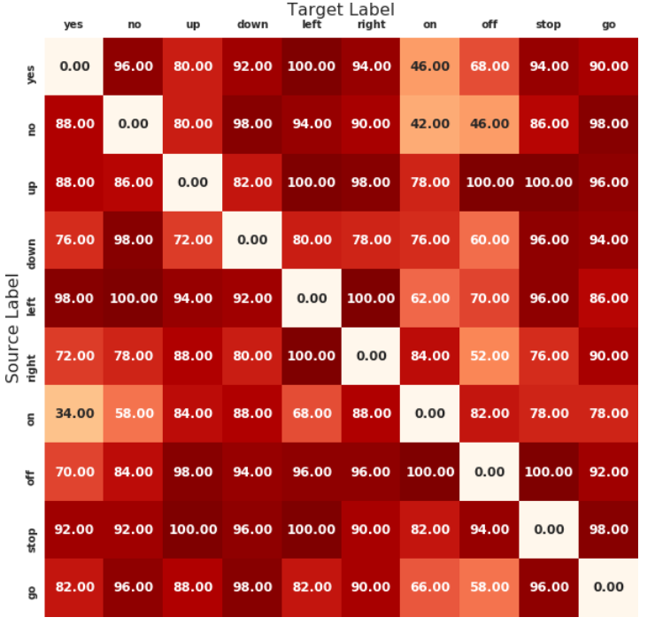11. 不可听超声波蕴含语义信息：DolphinAttack: Inaudible Voice Commands
海豚音攻击：利用麦克风的非线性来用高于20 kHz的超声波调节基带音频信号，可以隐藏转录。让正常的语音隐藏到高频波段中，从而让其无法被听到。
实质上是利用了麦克风的非线性漏洞，使得高频信号采样后出现额外的低频分量
12. 心理声学模型：Adversarial Attacks Against Automatic Speech Recognition Systems via Psychoacoustic Hiding
介绍了一种基于心理声学隐藏的攻击ASR系统的新型对抗样本。利用如MP3编码中的心理声学建模，以减少可察觉的噪音。
- 白盒、有目标的、针对DNN-HMM模型的对抗攻击算法
- 首次提出使用升学掩蔽效应
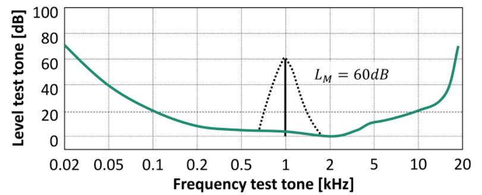
example：黑色为1Khz处60db的能量掩蔽曲线
13 音乐+指令隐藏：CommanderSong: A Systematic Approach for Practical Adversarial Voice Recognition
在歌曲中加入语音命令，通过播放歌曲实施攻击
14. Practical Hidden Voice Attacks against Speech and Speaker Recognition Systems
- Hidden voice的黑盒扩展，将正常语音模糊化，攻击特征提取模块
- 体现出语音攻击在物理、黑盒环境下的挑战是很大的
15. Hear “No Evil”, See “Kenansville”: Efficient and Transferable Black-Box Attacks on Speech Recognition and Voice Identification Systems.
https://github.com/kwarren9413/kenansville_attack
- 声称能做到近实时、黑盒、可迁移欺骗ASR，对抗语音几乎不会误导人耳，但是会产生非目标识别错误
- 可以大大减少黑盒攻击下query的次数
- 不是基于梯度来做的
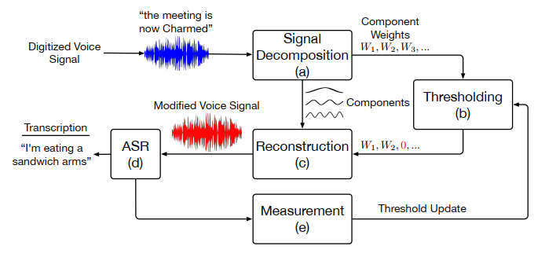
signal decomposition用的是DFT or SSA，没用MFCC，步骤也比较简单，就是设置阈值对信号进行截断，在不影响人耳识别的情况下，尽可能欺骗ASR。由于不涉及梯度，所以可以看作是黑盒的。
16. The Faults in our ASRs: An Overview of Attacks against Automatic Speech Recognition and Speaker Identification Systems
2021年 S&P的一篇综述：（Hadi Abdullah在audio攻击有若干工作）下图是总结了已有攻击的各个维度的对比。
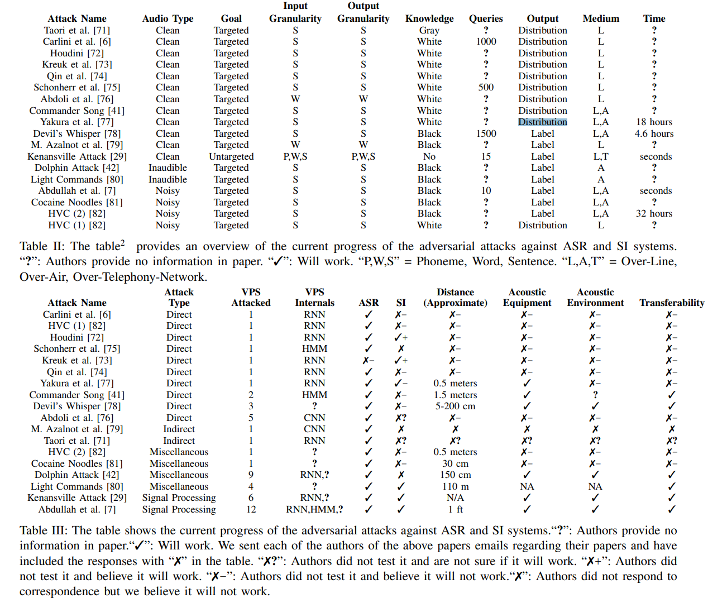
总结
对语音识别系统做对抗样本攻击，首先要了解语音模型的识别流程，重点是特征提取的CTC步骤，然后在黑盒下要注意使用遗传算法，同时，要做到现实可用且不可察觉两点要求。基于上述的攻击目标，目前的工作基本只能完成其中几项，且实验条件苛刻。